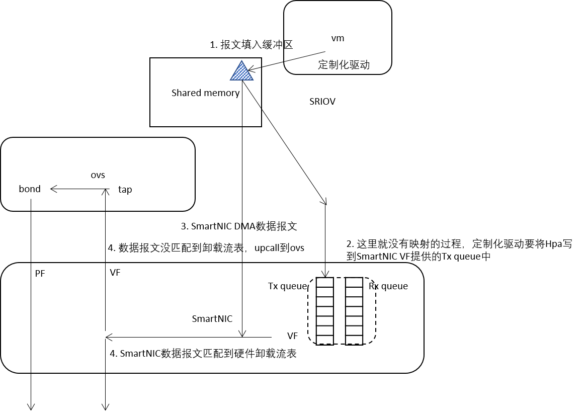
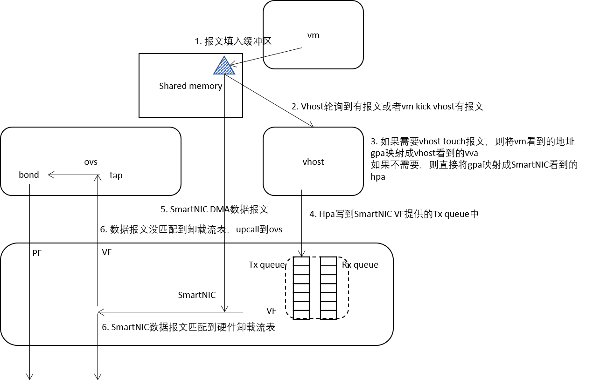

服务器内虚拟交换方案
早期在服务内虚拟机对外交换的方案是采用虚拟交换的方式，如图所示，通过虚拟交换机与外面进行数据交换。这样存在的问题是数据路径较长，且虚拟交换机是纯软件实现，交换性能受限。即便虚拟交换机数据平面从内核态到用户态的演进，仍然对日益增长的数据流量束手无策。
软硬结合的虚拟交换方案
现在公有云对服务器内虚拟交换的方案，通常采用软硬结合的方案，来提升云网络的交换性能，如图所示。引入智能网卡，通过直通的方式，让虚拟机的虚拟网卡与智能网卡直接数据交互，不再通过虚拟交换机，以达到更高的性能要求。
对于采用软硬结合的虚拟交换方案，通用的有2种实现方案：
- 采用SRIOV的方案
- 采用VIRTIO的方案
软硬结合SRIOV方案

SRIOV方案需要在虚拟机内部安装网卡的定制驱动，报文基本流程（vm tx）：
- vm将报文填入共享内存中
- 定制化驱动将报文的HPA写入VF的Tx queue中
- SmartNIC对HPA地址进行DMA获取报文
- SmartNIC对报文与硬件卸载流表进行匹配，匹配成功，报文即从相应端口发送出去
- 报文没有匹配到硬件卸载流表，上送到OVS
- OVS进行查表/硬件流表卸载等操作
- 报文从bond口reinject到网卡发送出去
软硬结合VIRTIO方案

VIRTIO方案采用标准化的virtio-net驱动，vm无需安装额外驱动，virtio-net已随Linux发布，报文基本流程（vm tx）：
- vm将报文填入共享内存区
- virtio后端通过轮询方式知道有报文或者vm发送kick事件通知virtio后端有报文
- 如果需要virtio后端处理报文，则将vm看到的gpa映射成virtio后端看到的vva，然后进行操作。
- 如果不需要virtio后端处理报文，则直接将gpa映射成SmartNIC看到的hpa
- virtio后端将hpa写到SmartNIC VF提供的Tx queue中
- SmartNIC 根据hpa地址DMA报文
- 报文匹配硬件卸载流表，如果匹配上，报文发送成功
- 报文没有匹配上硬件卸载流表，上送OVS
- OVS查表/卸载流表到SmartNIC中
- 报文从bond口reinject到网卡发送出去